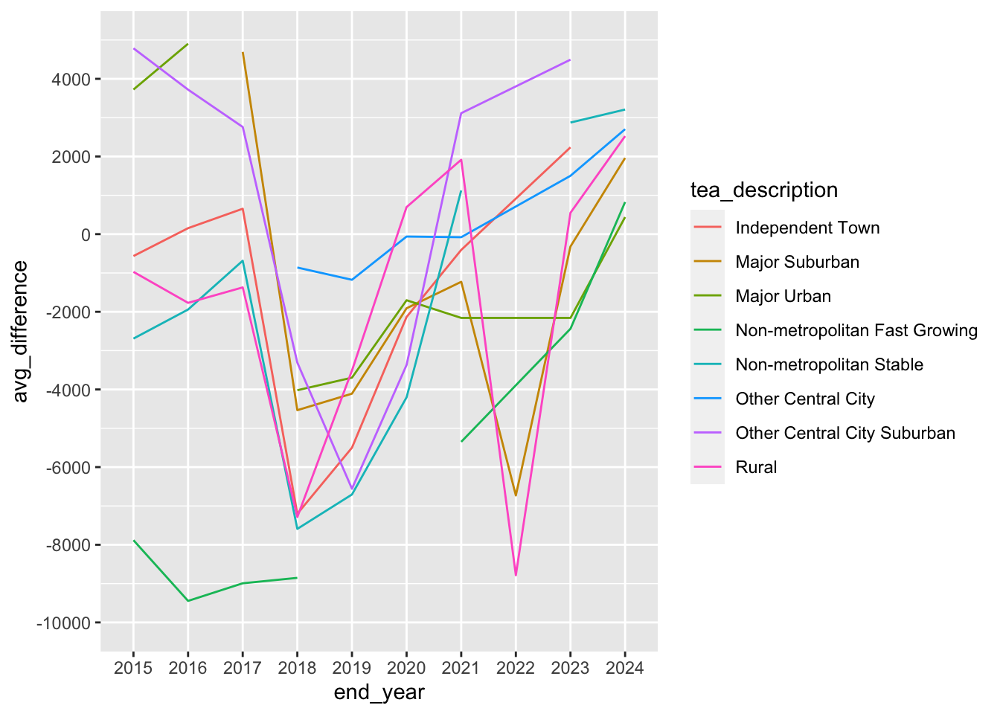
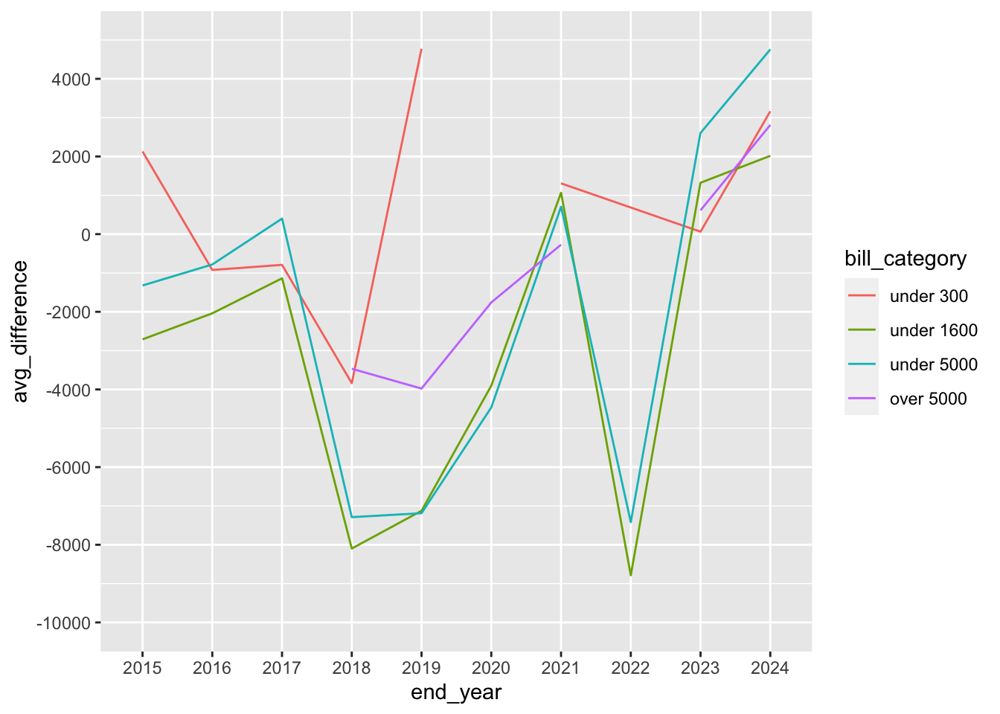

library(tidyverse)
library(janitor)
library(scales)
library(sf)
library(mapview)
library(RColorBrewer)AnalysisRegion20
Setup
salary_col_comparison <- read_rds("data-processed/salary_col_comparison.rds")
bill_category_df <- read_rds("data-processed/bill_cateogry_df.rds")Region 20 - San Antonio
All of the above for region 20…
region_20 <- salary_col_comparison |> filter(region == 20)
region_20# A tibble: 501 × 12
# Groups: county [19]
region county district_name district_number total_enrollment average_base_pay
<chr> <chr> <chr> <chr> <dbl> <dbl>
1 20 ATASC… CHARLOTTE ISD 007901 514 45651
2 20 ATASC… JOURDANTON I… 007902 1638 52259
3 20 ATASC… LYTLE ISD 007904 1724 46936
4 20 ATASC… PLEASANTON I… 007905 3569 45390
5 20 ATASC… POTEET ISD 007906 1745 47117
6 20 ATASC… CHARLOTTE ISD 007901 499 44759
7 20 ATASC… JOURDANTON I… 007902 1611 51969
8 20 ATASC… LYTLE ISD 007904 1675 48807
9 20 ATASC… PLEASANTON I… 007905 3508 46322
10 20 ATASC… POTEET ISD 007906 1788 47552
# ℹ 491 more rows
# ℹ 6 more variables: school_year <chr>, end_year <chr>, tea_description <chr>,
# nces_description <chr>, alice_threshold_hh_under_65 <dbl>, difference <dbl>region_20 |> group_by(end_year) |> slice_min(difference, n = 10)# A tibble: 94 × 12
# Groups: end_year [10]
region county district_name district_number total_enrollment average_base_pay
<chr> <chr> <chr> <chr> <dbl> <dbl>
1 20 LA SA… COTULLA ISD 142901 1353 45395
2 20 FRIO … PEARSALL ISD 082903 2363 46324
3 20 FRIO … DILLEY ISD 082902 1048 48299
4 20 KARNE… FALLS CITY I… 128904 360 52118
5 20 KINNE… BRACKETT ISD 136901 641 43246
6 20 ZAVAL… CRYSTAL CITY… 254901 2069 43401
7 20 MEDIN… D'HANIS ISD 163902 342 43859
8 20 MEDIN… NATALIA ISD 163903 1127 44658
9 20 WILSO… STOCKDALE ISD 247906 834 44705
10 20 ATASC… PLEASANTON I… 007905 3569 45390
# ℹ 84 more rows
# ℹ 6 more variables: school_year <chr>, end_year <chr>, tea_description <chr>,
# nces_description <chr>, alice_threshold_hh_under_65 <dbl>, difference <dbl>region_20 |> group_by(end_year) |> slice_max(difference, n = 10)# A tibble: 94 × 12
# Groups: end_year [10]
region county district_name district_number total_enrollment average_base_pay
<chr> <chr> <chr> <chr> <dbl> <dbl>
1 20 KERR … DIVIDE ISD 133905 -9999993 63861
2 20 BEXAR… LACKLAND ISD 015913 884 57990
3 20 BEXAR… ALAMO HEIGHT… 015901 4763 57170
4 20 MAVER… EAGLE PASS I… 159901 15076 51904
5 20 BEXAR… FT SAM HOUST… 015914 1514 55717
6 20 BANDE… BANDERA ISD 010902 2280 50255
7 20 GUADA… SCHERTZ-CIBO… 094902 14638 55220
8 20 BEXAR… SOUTHWEST ISD 015912 13524 55206
9 20 BEXAR… RANDOLPH FIE… 015906 1293 54867
10 20 BEXAR… EAST CENTRAL… 015911 9836 54484
# ℹ 84 more rows
# ℹ 6 more variables: school_year <chr>, end_year <chr>, tea_description <chr>,
# nces_description <chr>, alice_threshold_hh_under_65 <dbl>, difference <dbl>Average and Median difference for all years together
region_20 |> group_by(tea_description) |>
summarize(avg_difference = mean(difference),
median_difference = median(difference),
number_of_districts_since_2015 = n()) |>
arrange(avg_difference)# A tibble: 8 × 4
tea_description avg_difference median_difference number_of_districts_…¹
<chr> <dbl> <dbl> <int>
1 Non-metropolitan Fast… -7710. -7882 11
2 Non-metropolitan Stab… -1814. -1275 159
3 Rural -1122. -1128 117
4 Independent Town -662. -1407 36
5 Major Urban 112. -783 27
6 Major Suburban 541. -608 99
7 Other Central City Su… 1364 1122 43
8 Other Central City 2467 1503 9
# ℹ abbreviated name: ¹number_of_districts_since_2015average and median difference for 2024.
region_20 |> filter(end_year == 2024) |>
group_by(tea_description) |>
summarize(avg_difference = mean(difference),
median_difference = median(difference),
number_of_districts_2024 = n()) |>
arrange(avg_difference)# A tibble: 8 × 4
tea_description avg_difference median_difference number_of_districts_…¹
<chr> <dbl> <dbl> <int>
1 Major Urban 438. 91 3
2 Non-metropolitan Fast… 827 827 2
3 Major Suburban 1961. 1519 11
4 Rural 2524. 6810 12
5 Other Central City 2703 2703 1
6 Non-metropolitan Stab… 3209. 4812 19
7 Other Central City Su… 5989. 4990 6
8 Independent Town 6807. 7106. 4
# ℹ abbreviated name: ¹number_of_districts_2024avg_difference_over_time_20 <- region_20 |> group_by(tea_description, end_year) |>
summarize(avg_difference = mean(difference, na.rm = T))`summarise()` has grouped output by 'tea_description'. You can override using
the `.groups` argument.avg_difference_over_time_20# A tibble: 75 × 3
# Groups: tea_description [8]
tea_description end_year avg_difference
<chr> <chr> <dbl>
1 Independent Town 2015 -564.
2 Independent Town 2016 154.
3 Independent Town 2017 654.
4 Independent Town 2018 -7202.
5 Independent Town 2019 -5500.
6 Independent Town 2020 -2133.
7 Independent Town 2021 -406.
8 Independent Town 2023 2236
9 Independent Town 2024 6807.
10 Major Suburban 2015 3141.
# ℹ 65 more rowsggplot(avg_difference_over_time_20,
aes(x = end_year, y = avg_difference, color = tea_description, group = tea_description)) +
geom_line() +
scale_y_continuous(limits = c(-10000,5000), n.breaks = 10)Warning: Removed 5 rows containing missing values (`geom_line()`).
bill_category_df |> filter(region == 20) |>
group_by(bill_category) |>
summarize(avg_difference = mean(difference, na.rm = T),
median_difference = median(difference, na.rm = T),
total_districts_since_2015 = n())# A tibble: 4 × 4
bill_category avg_difference median_difference total_districts_since_2015
<fct> <dbl> <dbl> <int>
1 under 300 1845. -94 39
2 under 1600 -2315. -1154 169
3 under 5000 -1388. -1557 152
4 over 5000 989. -79 141bill_category_df |> filter(region == 20 & end_year == 2024) |>
group_by(bill_category) |>
summarize(avg_difference = mean(difference, na.rm = T),
median_difference = median(difference, na.rm = T),
total_districts_2024 = n())# A tibble: 4 × 4
bill_category avg_difference median_difference total_districts_2024
<fct> <dbl> <dbl> <int>
1 under 300 3164. 9579 4
2 under 1600 2017. 4906. 20
3 under 5000 4756. 5169 17
4 over 5000 2812. 1904 17avg_difference_bill_category_20 <- bill_category_df |>
filter(region == 20) |>
group_by(bill_category,end_year) |>
summarize(avg_difference = mean(difference, na.rm = T))`summarise()` has grouped output by 'bill_category'. You can override using the
`.groups` argument.avg_difference_bill_category_20# A tibble: 39 × 3
# Groups: bill_category [4]
bill_category end_year avg_difference
<fct> <chr> <dbl>
1 under 300 2015 2129.
2 under 300 2016 -923.
3 under 300 2017 -791
4 under 300 2018 -3839
5 under 300 2019 4772.
6 under 300 2020 10502.
7 under 300 2021 1309.
8 under 300 2023 63
9 under 300 2024 3164.
10 under 1600 2015 -2710.
# ℹ 29 more rowsggplot(avg_difference_bill_category_20,
aes(x = end_year, y = avg_difference, color = bill_category, group = bill_category)) +
geom_line() +
scale_y_continuous(limits = c(-10000,5000), n.breaks = 10)
Same as above but for region 20
region_20 |> group_by(nces_description) |>
summarize(avg_difference = mean(difference),
median_difference = median(difference),
number_of_districts = n()) |>
arrange(avg_difference)# A tibble: 9 × 4
nces_description avg_difference median_difference number_of_districts
<chr> <dbl> <dbl> <int>
1 Rural-Distant -2965. -4183 91
2 Town-Distant -2116. -2794 46
3 Town-Remote -1896. -1549 75
4 Town-Fringe -1046. -2208. 14
5 City-Small -562. -562. 2
6 Rural-Remote -375. -249 53
7 Suburb-Large 71.2 1084 34
8 City-Large 488. -424 75
9 Rural-Fringe 1037. 815 111